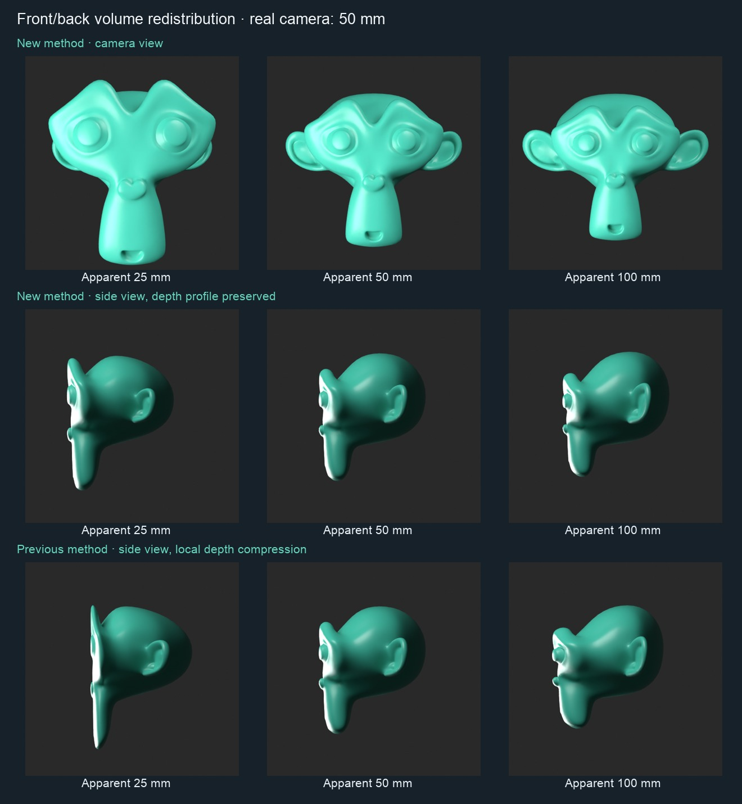

Shorter apparent lens: front grows, back shrinks. Longer lens: the reverse. Every vertex has the same change in camera depth, so depth differences stay unchanged. One quadratic solve balances total signed volume on a closed triangle mesh.
Editable Blender prototype · 5.1.2 measurements · 5.2.2 measurements
Tested volume error below 0.00007%; no local depth flattening. Physical focus/contact moves slightly. These are actual CPU renders on the same closed triangulated mesh with matching cameras/lights. Both algorithms explicitly verified neutral at 50 mm.
Performance remains open: 4.1–5.4 ms median at 164k vertices, substantially slower than the previous local formula. This prototype is not installed into production CamKeys. Closed triangles only; no arbitrary mask, rig, companion or full Windows/4.2 qualification.
